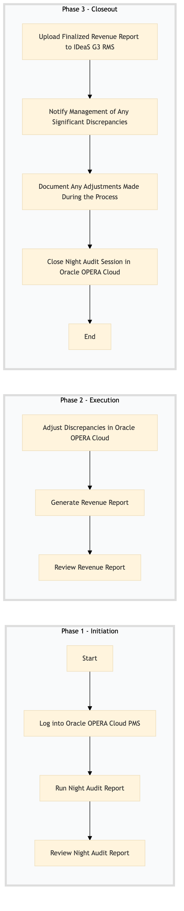

| Role | Steps |
|---|---|
| Revenue Manager | 1.1 1.2 1.3 2.1 2.2 2.3 3.1 3.2 3.3 3.4 |
| Step | Name | Role | System | Input | Output | KPI | Dec? | Exc? | Pain Point / Risk |
|---|---|---|---|---|---|---|---|---|---|
| 1.1 | Log into Oracle OPERA Cloud PMS | Revenue Manager | Oracle OPERA Cloud | None | Logged-in session in Oracle OPERA Cloud | Less than 2 minutes | N | N | Slow login times due to system overload |
| 1.2 | Run Night Audit Report | Revenue Manager | Oracle OPERA Cloud | Logged-in session in Oracle OPERA Cloud | Night Audit report | Less than 5 minutes | N | Y | Incorrect or missing data in the report |
| 1.3 | Review Night Audit Report | Revenue Manager | Oracle OPERA Cloud | Night Audit report | Analyzed discrepancies | Less than 10 minutes | Y | N | Complex or numerous discrepancies |
| 2.1 | Adjust Discrepancies in Oracle OPERA Cloud | Revenue Manager | Oracle OPERA Cloud | Analyzed discrepancies | Updated guest accounts and ledger | Less than 15 minutes per discrepancy | N | Y | Errors in adjusting transactions |
| 2.2 | Generate Revenue Report | Revenue Manager | Oracle OPERA Cloud | Updated guest accounts and ledger | Daily revenue report | Less than 5 minutes | N | Y | Report generation errors |
| 2.3 | Review Revenue Report | Revenue Manager | Oracle OPERA Cloud | Daily revenue report | Finalized revenue report | Less than 10 minutes | Y | N | Incorrect or incomplete data in the final report |
| 3.1 | Upload Finalized Revenue Report to IDeaS G3 RMS | Revenue Manager | IDeaS G3 RMS | Finalized revenue report | Uploaded report in IDeaS G3 RMS | Less than 5 minutes | N | Y | System connectivity issues |
| 3.2 | Notify Management of Any Significant Discrepancies | Revenue Manager | Email/Communication System | Finalized revenue report | Notification email to management | Less than 5 minutes | Y | N | Effective communication of discrepancies |
| 3.3 | Document Any Adjustments Made During the Process | Revenue Manager | Oracle OPERA Cloud | Finalized revenue report | Audit trail of adjustments | Less than 10 minutes | N | Y | Incomplete or inaccurate documentation |
| 3.4 | Close Night Audit Session in Oracle OPERA Cloud | Revenue Manager | Oracle OPERA Cloud | Finalized revenue report and audit trail | Closed night audit session | Less than 2 minutes | N | Y | Errors in closing the session |
Daily Revenue Balancing is a critical process at Marriott full-service hotels to ensure accurate financial reconciliation and reporting. This process involves verifying room revenue, adjusting discrepancies, and preparing reports for management.